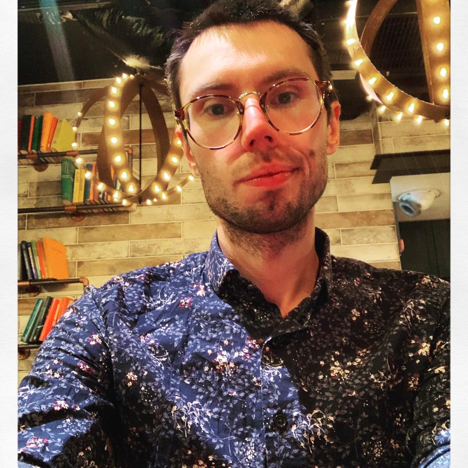

главная • исследования • • cv • email • in English
Здесь вы можете увидеть полный список публикаций и докладов. Здесь это ссылка на диссертационную работу.
Моя диссертация диссертация посвящена рассмотрению восприятия и отношения жителей из г. Воронеж к фрикативному «г» (/noɣa/ vs. /noga/ ‘нога’) (далее гэканье), прежде не получивших в науке полного и непротиворечивого описания. С точки зрения современного русского литературного языка, гэканье оказывается одной из ярких черт ненормативного произношения. Южное наречие русского языка, в том числе гэканье подвергается значительной стигматизации. Это связано с влиянием прескриптивного языка на языковые нормы. В бывшем Советском Союзе и современной Российской Федерации прескриптивизм привёл к публикации нормативных работ, последствия которых повысили престиж современного литературного варианта по сравнению с другими. Это укрепляется языковыми идеологиями, которые являются моноглассическими, т. е. они стирают разнообразие, продвигая, помимо всего прочего, единый стандартный вариант, и делают некоторых носителей других вариантов не способными продемонстрировать владение языком. В данном исследовании представлены результаты ответов на онлайн-опрос, показывающий отношение воронежцев к гэканью. Опрос состоял из трех частей: (1) демографические вопросы, (2) десять аудиозаписей со скалярными вопросами, и (3) открытые вопросы о восприятии гэканья.Результаты исследования показывают, что независимо от пола, респонденты, как правило, считают гэкающих менее образованными, умными, культурными, грамотными, надежными или, достойными доверия, занимающими важную должность, хорошо обеспеченными и вежливыми по сравнению с носителями литературного варианта. Полученные результаты также свидетельствуют о том, что существует несоответствие между явными и скрытыми отношениями, и связь между социо-экономической мобильностью, сельской местностью, доступом к образованию и указанными респондентами отношениями к гэканью.В данном исследовании представляются дополнительные доказательства языковой стигматизации, и поддерживается утверждение о том, что языковые идеологии усиливают негативное отношение к гэканью и формируют представление о гэкающих как недостаточно интеллектуальных и некомпетентных. И среди всего прочего, наблюдается, что с влиянием литературного варианта даже в городском центре на юге увеличивается вероятность вытеснения гэканья взрывным «г».
Это исследование посвящено рассмотрению восприятия людьми того, как говорят на украинском языке в различных регионах Украины. Несмотря на то, что ведется работа в области перцептивной диалектологии (PD) среди некоторых западноевропейских языков (в том числе, английский, испанский, французский и др.), на сегодняшний день все еще недостаточно информации PD о восприятии и отношении к украинскому языку в Украине. Заметным исключением является исследование Редквы и Стаховски (2019), проведенное в Черновцах, Украина, с целью выяснить, «где люди говорят по-другому». Настоящее исследование предлагает изучить отношения и восприятия украинского языка респондентами, прожившими не менее половины своей жизни в Украине, которым было предложено нарисовать карту Украины с двенадцатью крупными городами и соседними геополитическими образованиями, указанными на ней. это - «где говорят на самом правильном украинском», и «где говорят на украинском, который режет уши». Набор для участия в онлайн-опросе проводился путем размещения рекламы на нескольких украиноязычных страницах Facebook вместе со ссылкой на опрос. Карты респондентов были проанализированы и сопоставлены с использованием QGIS 3.16.2 Geographic Information System. В результате анализа сгенерированных карт возникли две важные темы: 1) есть тенденция западных регионов расматривать более юго-восточные регионы как районы, где речь режет уши, и 2) восприятие юго-восточных регионов приписывать западу такие регионы. речи. Данное исследование также показывает, что представления носителей украинского языка не обязательно совпадают с тдиалектнымм зонами украинского языка, которые предлагают диалектологи.